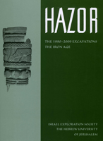

Amnon Ben-Tor, Doron Ben-Ami, and Debora Sandhaus
Hazor VI. The 1990 - 2009 Excavations. The Iron Age
Jerusalem: Israel Exploration Society. Institute of Archaeology, The Hebrew University of Jerusalem, 2012
|  | This volume, the sixth in the Hazor series, is the first to present the results of twenty years of excavation and research by the renewed expedition of Hazor (1990 - 2009). It presents the Iron Age remains uncovered in Area A, located at the center of the Upper City of Hazor. The Bronze Age remains uncovered in this area will be the subject of Hazor VII. Part I consists of four chapters presenting the stratigraphy of the Iron Age remains (stratum "XII/XI" to Stratum C), which extend over an rea of closet to 4,000m2. The fact that such a large area was excavated led to technical difficulties in present all the structures belonging to a single stratum on one plan. Consequently, the discussion of each stratum begins with a schematic plan, on which each building is identified by its main locus number. Detailed plans of individual buildings accompany the discussion, each with an inset showing its location on the schematic plan. Part II consists of two chapters providing a detailed discussion of the pottery types uncovered at Hazor. Despite the relegation of the stratigraphical discussion of Stratum IV to Hazor VII, the ceramic assemblage of this stratum is discussed in the present volume, as it reflects the general trends exhibited by the Iron Age ceramic assemblages. Part III contains twelve chapters presenting other find uncovered in the Iron Age strata at Hazor, as well as analyses of the achaeozoological finds. |
{kind=link}
| Back to Publications | Title Page |
Table of Contents |
{kind=link}